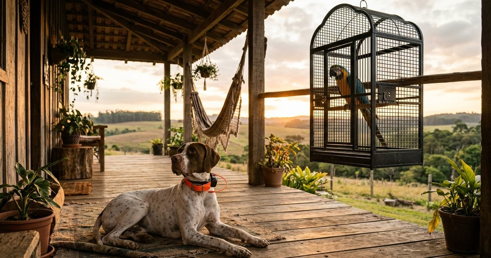
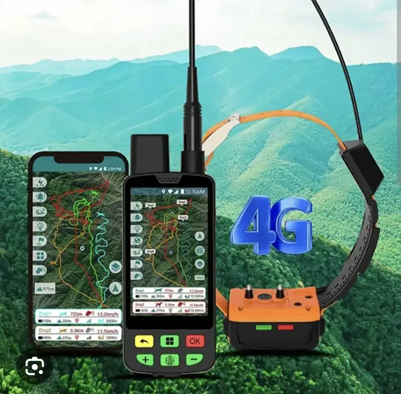
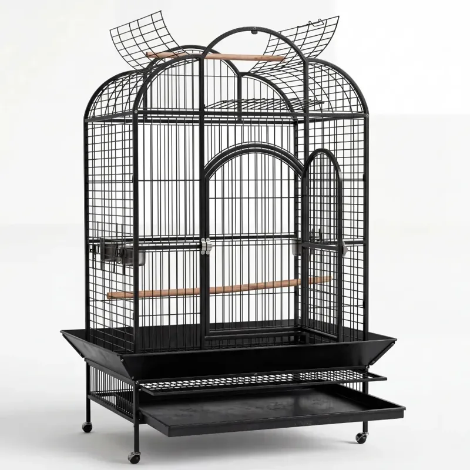
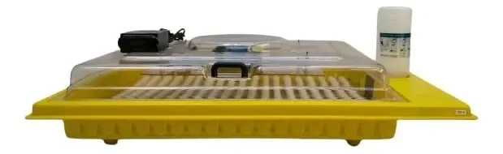

Produtos Pet de Alto Padrão em 2026: Coleira GPS de Longo Alcance, Viveiro e Chocadeira

Este post contém links de afiliado. Podemos receber uma comissão em compras feitas através deles, sem custo adicional para você.
Nem todo produto pet caro é para cão ou gato de apartamento. Quem tem cães de trabalho no campo, aves de grande porte ou cria galinhas e codornas precisa de equipamento robusto, e é nesse universo que estão estes três produtos pet de alto padrão: uma coleira GPS de longo alcance com rádio e 4G, um viveiro de quase 2 metros para papagaio e uma chocadeira para 130 ovos. Analisamos ficha técnica, preço e o que muda no uso de cada um, com preços do Mercado Livre em 27/11/2026, todos com envio nacional.
Resposta curta: a coleira GPS Eseek (R$ 5.650) é para cães que andam longe de casa e de sinal de celular, como em fazendas e trilhas: o rádio alcança cerca de 15 km. O viveiro Veneza (R$ 4.749) dá espaço de verdade a um papagaio, com 185 cm de altura. E a chocadeira Hobby 130 (R$ 3.990) é a mais bem avaliada dos três, com nota 4,9 e viragem automática.
Quer ver o preço agora? Chocadeira Hobby 130 no Mercado Livre, nota 4,9 e 10x sem juros.Link de afiliado — sem custo extra para você.
Ver preço no Mercado Livre →- Para cães que se afastam de casa e do sinal de celular: Coleira GPS Eseek (R$ 5.650) Ver preço
- Para papagaio e aves grandes: Viveiro Veneza American Pets (R$ 4.749, +100 vendidos) Ver preço
- Para chocar ovos em casa ou no sítio: Chocadeira Hobby 130 (R$ 3.990, nota 4,9) Ver preço
Resumo dos 3 Produtos
Preços consultados no Mercado Livre em 27/11/2026, todos com frete grátis e envio nacional. Preços sujeitos a alteração — confira o valor atual no botão.
| Produto | Para quem | Destaque | Nota no ML | Preço | |
|---|---|---|---|---|---|
| Coleira GPS Eseek | Cães em áreas rurais e trilhas | Rádio VHF de ≈ 15 km + 4G | Não exibida | R$ 5.650 | Ver preço |
| Viveiro Veneza | Papagaios e aves grandes | 185 x 131 x 102 cm | 4,4 (+100 vendidos) | R$ 4.749 | Ver preço |
| Chocadeira Hobby 130 | Criadores de galinhas e aves | 130 ovos, viragem automática | 4,9 (+100 vendidos) | R$ 3.990 | Ver preço |
Os 3 Produtos, um a um
Como montamos a lista: não testamos os produtos. Analisamos as fichas dos fabricantes e de distribuidores oficiais e os anúncios do Mercado Livre (preço, parcelamento, frete, nota e vendas) em 27/11/2026. O que não encontramos aparece como "não informado pelo fabricante".
Coleira GPS Eseek de Longo Alcance para Cães
Para quem é: tutores de cães de trabalho ou de caminhada em fazendas, sítios, trilhas e áreas sem sinal de celular confiável.

A Eseek não é uma coleira GPS comum de cidade. O sistema tem duas partes: a coleira, com antena, e um aparelho de mão com tela sensível ao toque de 3,97 polegadas e Android, que mostra os cães num mapa. A comunicação entre os dois é feita por rádio VHF, com alcance de cerca de 15 km segundo os distribuidores, e também por 4G, onde houver cobertura de celular. A localização usa GPS e GLONASS.
É essa combinação que justifica o preço. As coleiras GPS mais comuns dependem só do celular: sem sinal, param de atualizar. Com rádio, a Eseek continua mostrando o cão em área rural sem cobertura, no limite do alcance e em linha de visada (relevo e mata fechada reduzem a distância real). Um aparelho de mão acompanha até 20 cães, a coleira é IP68 e o aparelho IP67. Segundo o fabricante, a coleira pesa 335 g e o aparelho 870 g.
Três pontos de atenção. Primeiro, o 4G exige chip: um distribuidor informa que são dois cartões SIM ativos, um no aparelho e outro na coleira, o que gera custo mensal com operadora. Segundo, a faixa de rádio muda por país (160 MHz numa versão, 169 MHz em outra) e não pode ser reprogramada pelo usuário; confirme com o vendedor a versão e a homologação na Anatel. Terceiro, o sistema traz funções de adestramento, incluindo estímulo elétrico; recomendamos não usá-la e preferir reforço positivo. Com 335 g, também não é coleira para cão pequeno.
| Preço | R$ 5.650 em 27/11/2026, 10x de R$ 565 sem juros, frete grátis |
|---|---|
| Tecnologia | GPS + GLONASS; rádio VHF (≈ 15 km) e 4G |
| Aparelho de mão | Tela de 3,97", Android; bateria de 6.400 a 6.800 mAh (fontes divergem); IP67; 870 g |
| Coleira | IP68; 335 g; tamanho M e cor laranja no anúncio |
| Bateria da coleira | Fontes divergem: de 28 a 60 horas |
| Cães por aparelho | Até 20 |
| Chip | 4G requer SIM no aparelho e na coleira, segundo distribuidor |
| Homologação Anatel | Não informada; confirme com o vendedor |
| Garantia | Não informada nas fontes consultadas |
| Origem | Envio nacional |
- Funciona por rádio onde não há sinal de celular
- Aparelho de mão próprio, até 20 cães
- Coleira IP68, para chuva e água
- 10x sem juros
- 4G depende de dois chips e plano de dados
- Faixa de rádio e homologação precisam ser confirmadas
- Coleira pesada (335 g) e função de choque que não recomendamos
Para cão de cidade que foge pelo portão, um rastreador comum resolve gastando muito menos: veja o ranking de coleira GPS para cachorro, as opções sem mensalidade e o guia de coleira GPS para cachorro que foge.
📡 Coleira GPS Eseek: veja o preço atual no Mercado Livre.
Ver preço atual no Mercado LivreViveiro Veneza American Pets para Papagaio (preto)
Para quem é: tutores de papagaio ou outra ave de grande porte que querem um viveiro onde ela possa se movimentar e abrir as asas.

O Veneza é o viveiro grande da American Pets, fabricante brasileira de gaiolas e viveiros. Com 185 x 131 x 102 cm, segundo o fabricante, é bem maior que uma gaiola comum de papagaio, o que importa para uma ave que passa boa parte do dia ali dentro. Pela foto do anúncio, o teto em arco abre e tem poleiro, o viveiro fica sobre rodinhas e há uma bandeja inferior para facilitar a limpeza.
A página da American Pets, porém, não traz ficha técnica: espaçamento entre as grades, bitola do arame, tipo de pintura, peso, número de portas e garantia não estão informados. Para papagaio, o espaçamento e a resistência da grade são o que mais importa, porque a ave usa o bico com força. Confira esses dados no anúncio ou pergunte ao vendedor antes de comprar.
No Mercado Livre, o anúncio tem mais de 100 vendidos e nota 4,4, a mais baixa dos três produtos desta página. O parcelamento é em 12x com juros. Lembre também que papagaio é ave silvestre: só pode ser mantido com origem legal, comprado de criadouro autorizado e com documentação.
| Preço | R$ 4.749 em 27/11/2026, 12x de R$ 456,54 (com juros), frete grátis |
|---|---|
| Medidas | 185 x 131 x 102 cm |
| Cor | Preto |
| Recursos (pela foto) | Teto em arco que abre com poleiro, rodinhas, bandeja inferior |
| Espaçamento, arame, pintura e peso | Não informados pelo fabricante |
| Garantia | Não informada |
| Origem | Nacional |
| Avaliações | 4,4 de 5 no Mercado Livre; +100 vendidos |
- 185 cm de altura: espaço real para ave grande
- Fabricante nacional, mais de 100 vendidos
- Rodinhas e bandeja facilitam limpeza
- Sem ficha técnica de grade e arame
- Nota 4,4, a menor desta página
- Parcelamento com juros
🦜 Viveiro Veneza: veja o preço atual no Mercado Livre.
Ver preço atual no Mercado LivreChocadeira Premium Ecológica Hobby 130
Para quem é: quem cria galinhas, codornas ou aves ornamentais e quer chocar em lote, em casa ou no sítio.

A Premium Ecológica é uma fabricante brasileira de chocadeiras, e a Hobby 130 é o modelo de 130 ovos de galinha da sua linha de entrada. A capacidade muda com o tamanho do ovo: o fabricante fala em cerca de 300 de codorna, 180 de faisão, 65 de pavão e 50 de ganso. São 19 roletes que giram os ovos sozinhos (viragem automática), com temperatura controlada digitalmente e circulação forçada de ar.
A umidade, por outro lado, é ajustada à mão: o kit traz uma garrafa e três cadarços que levam água para dentro da chocadeira, e um termômetro. Quem quer umidade digital precisa ir para outra linha da marca, a IP 130 D, que custava R$ 4.550 no site do fabricante. A base é de poliestireno e a tampa de PETG transparente, para acompanhar os ovos sem abrir. Mede 25 x 62 x 85 cm, pesa cerca de 15 kg e tem certificação Inmetro.
Um detalhe a conferir: o título do anúncio fala em 235 W, mas a página do fabricante informa 130 W. A voltagem é 127 V ou 220 V, a escolher. A garantia é de 12 meses, segundo a página do produto. No Mercado Livre, a nota é 4,9 com mais de 100 vendidos, a melhor desta página. No site do fabricante, o preço à vista no Pix aparecia em R$ 3.190; no Mercado Livre, as vantagens são o parcelamento em 10x sem juros e o frete grátis.
| Preço | R$ 3.990 em 27/11/2026, 10x de R$ 399 sem juros, frete grátis |
|---|---|
| Capacidade | ≈ 130 ovos de galinha; 300 de codorna; 180 de faisão; 65 de pavão; 50 de ganso |
| Viragem | Automática, 19 roletes |
| Temperatura | Controle digital |
| Umidade | Manual (garrafa e cadarços) |
| Ventilação | Circulação forçada de ar |
| Potência | 130 W segundo o fabricante (o anúncio diz 235 W) |
| Voltagem | 127 V ou 220 V |
| Medidas e peso | 25 x 62 x 85 cm; ≈ 15 kg |
| Na caixa | Chocadeira, 19 roletes, termômetro, manual, tela de proteção, garrafa e 3 cadarços |
| Garantia | 12 meses (página do produto) |
| Origem | Nacional, certificação Inmetro |
| Avaliações | 4,9 de 5 no Mercado Livre; +100 vendidos |
- Nota 4,9 com mais de 100 vendas
- Viragem automática e temperatura digital
- Aceita ovos de vários tamanhos
- 10x sem juros
- Umidade manual, exige acompanhamento
- Potência diverge entre anúncio e fabricante
- Mais caro no ML que à vista no site do fabricante
🐣 Chocadeira Hobby 130: veja o preço atual no Mercado Livre.
Ver preço atual no Mercado LivreGuia de Compra: o que Olhar em Cada Categoria
Coleira GPS para cachorro: rádio, celular ou Bluetooth
Rastreadores com chip de celular (4G) mostram o cão em qualquer lugar com cobertura, mas dependem de plano de dados. Os de Bluetooth são baratos e só funcionam perto de outros aparelhos. Os de rádio, como a Eseek, funcionam sem cobertura, dentro do alcance. Para quintal e cidade, chip ou Bluetooth bastam; para campo e mata, o rádio faz diferença. Em qualquer caso, confira peso da coleira, bateria, resistência à água e homologação na Anatel.
Viveiro para papagaio: tamanho e grade
O viveiro precisa permitir que a ave abra as asas e se movimente entre poleiros. Além das medidas, olhe o espaçamento entre as grades (a ave não pode passar a cabeça), a espessura do arame (papagaio usa o bico com força), a pintura atóxica e a facilidade de limpeza da bandeja. Se a ficha não informa, pergunte ao vendedor.
Chocadeira: viragem, temperatura e umidade
Os três controles que mais pesam na taxa de eclosão são viragem, temperatura e umidade. Viragem automática dispensa girar os ovos à mão várias vezes ao dia. Temperatura digital mantém o calor estável. Umidade manual funciona, mas pede acompanhamento com higrômetro; a digital custa mais. Escolha a capacidade pelo tamanho do seu lote, não pelo máximo.
Voltagem, garantia e nota
A chocadeira tem versões 127 V e 220 V; escolha a certa no anúncio. Garantia só é informada pela Premium Ecológica (12 meses). Entre os três, a chocadeira tem a melhor nota (4,9) e o viveiro a menor (4,4); a coleira não tinha nota visível na página consultada.
Perguntas Frequentes
Coleira GPS de longo alcance funciona sem sinal de celular?
Depende da tecnologia. Coleiras só com chip 4G param de atualizar sem cobertura. Modelos com rádio, como a Eseek, continuam enviando a posição ao aparelho de mão por VHF, com alcance de cerca de 15 km em linha de visada. Relevo e mata fechada reduzem o alcance real.
Qual o melhor rastreador GPS para cães?
Depende de onde o cão anda. Para cidade e quintal, um rastreador com chip ou Bluetooth resolve gastando menos, como mostramos no nosso ranking de coleiras GPS. Para fazendas, trilhas e áreas sem sinal, um sistema com rádio e aparelho de mão, como a Eseek de R$ 5.650, é o mais indicado.
A coleira GPS Eseek precisa de chip?
Para o modo 4G, sim: um distribuidor informa que são necessários dois chips ativos, um no aparelho de mão e outro na coleira, com custo de operadora. O modo de rádio VHF funciona sem chip, dentro do alcance. Confirme com o vendedor a versão de rádio e a homologação na Anatel.
Qual o tamanho ideal de viveiro para papagaio?
Grande o bastante para a ave abrir as asas e se deslocar entre poleiros sem bater nas grades. Viveiros como o Veneza, com 185 x 131 x 102 cm, oferecem bem mais espaço que gaiolas comuns. Além do tamanho, confira o espaçamento entre as grades e a resistência do arame.
Precisa de autorização para ter papagaio?
Sim. O papagaio é ave silvestre, e só pode ser mantido com origem legal: comprado de criadouro autorizado, com nota fiscal e documentação de identificação da ave. Retirar da natureza ou comprar sem documentos é crime ambiental. Na dúvida, consulte o órgão ambiental do seu estado.
Qual a melhor chocadeira automática para começar?
Entre as opções que analisamos, a Premium Ecológica Hobby 130 tem a melhor avaliação (4,9 no Mercado Livre), viragem automática e temperatura digital, por R$ 3.990. A umidade é ajustada manualmente. Para quem quer umidade digital, a mesma marca vende a linha IP 130 D, mais cara.
Quantos ovos cabem numa chocadeira de 130 ovos?
Os 130 se referem a ovos de galinha. Com ovos menores ou maiores, a conta muda: na Hobby 130, o fabricante indica cerca de 300 ovos de codorna, 180 de faisão, 65 de pavão e 50 de ganso. São valores aproximados, que dependem do tamanho dos ovos.
Conclusão: Qual Comprar
- Cão que se afasta de casa em área rural ou trilha: coleira GPS Eseek, confirmando versão de rádio e Anatel.
- Papagaio ou ave grande que precisa de espaço: viveiro Veneza, conferindo a grade no anúncio.
- Chocar ovos em lote com pouca mão de obra: chocadeira Hobby 130.
Para outros equipamentos premium, veja o guia de produtos pet premium que valem o investimento, a melhor caixa de areia automática, o melhor secador para pet shop e os equipamentos premium para aquário.
Veja nossa política editorial e como verificamos as fontes citadas neste artigo. Fichas técnicas: eSEEK e distribuidores, American Pets e Premium Ecológica, consultados em 27/11/2026.
🐣 Chocadeira Hobby 130: nota 4,9 e viragem automática.
Ver preço atual no Mercado LivreLink de afiliado: podemos receber uma comissão por compras feitas através deste link, sem custo adicional para você. Preços sujeitos a alteração — confira o valor atual no botão.